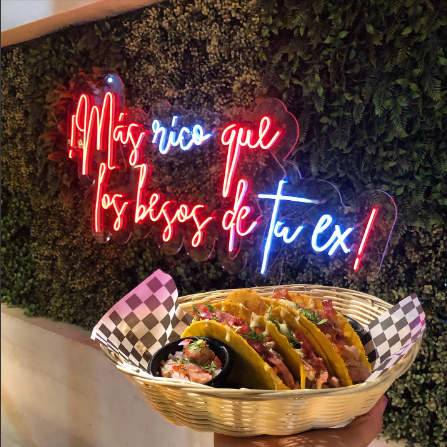

¿Que buscas para comer?
Ceviche de camarón: Un plato popular que consiste en camarones frescos cocidos y marinados en jugo de limón, cilantro, cebolla y tomate. Guisos de pescado: La proximidad a fuentes de agua proporciona pescado fresco, que se prepara en guisos con una variedad de ingredientes locales y condimentos. Empanadas de verde: Empanadas hechas a base de plátano verde, rellenas de queso, carne u otros ingredientes, y luego fritas hasta obtener una textura crujiente. Arroz con menestra: Un plato tradicional que consiste en arroz acompañado de menestra (legumbres cocidas como lentejas o frijoles), carne y ensalada. Encebollado: Una sopa espesa y sustanciosa hecha con pescado, yuca, cebolla, cilantro y otros condimentos. Seco de pollo: Un estofado de pollo cocido a fuego lento con hierbas, especias y a veces cerveza, servido con arroz y plátano maduro. Bollos de pescado: Bolas de masa rellenas de pescado, cebolla y condimentos, cocidas al vapor o al horno. Mote pillo: Mote (maíz hominy) cocido y mezclado con huevos y otros ingredientes, a menudo acompañado de carne o pescado. Estos son solo algunos ejemplos de la rica oferta gastronómica de Pasaje, que combina sabores tradicionales de la región con ingredientes frescos y locales. La diversidad de la cocina refleja la cultura ecuatoriana y es una parte integral de la experiencia culinaria en la ciudad.

La gastronomía de Pasaje, Ecuador, es un reflejo de la diversidad cultural y de los recursos naturales disponibles en la región.